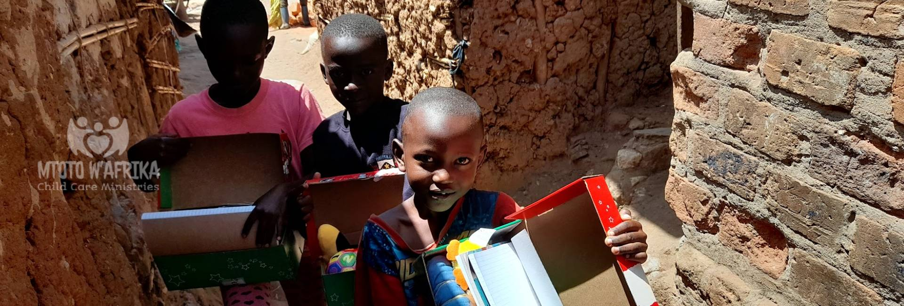
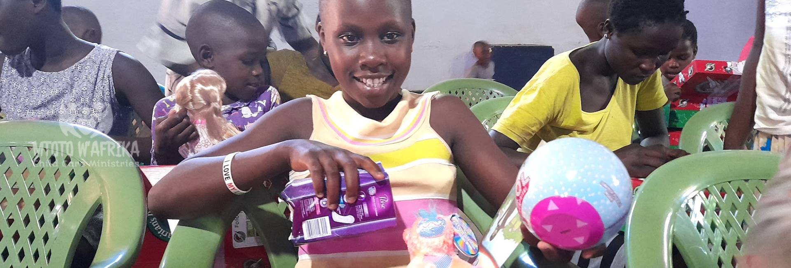
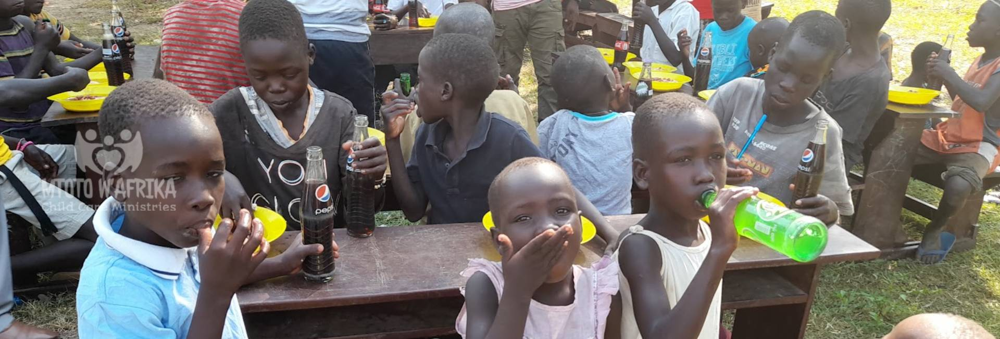
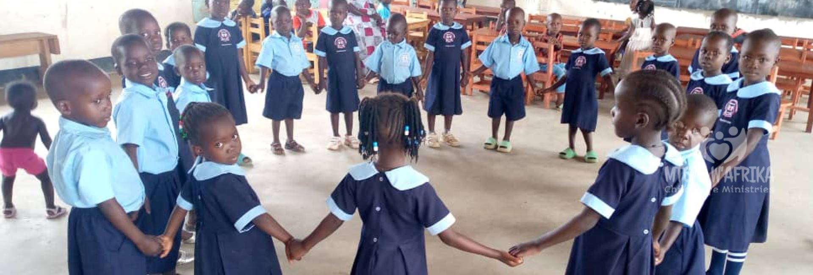
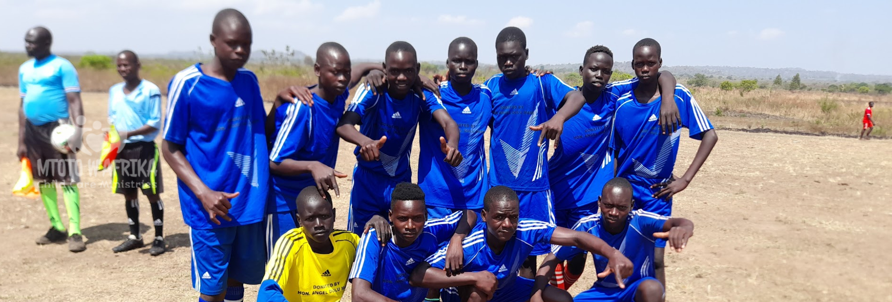
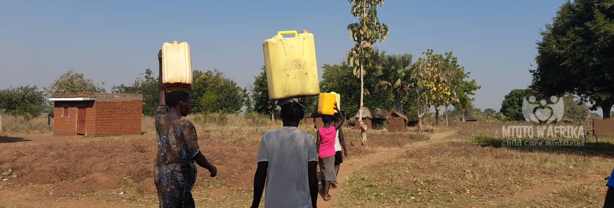

Overview of Our Projects
Children's Activities
We want to allow disadvantaged children the chance to just enjoy being children, to play and have fun away from the stresses and worries of their everyday lives...
Supporting Basic Needs Projects
Many of the children who attend Mtoto W’afrika Child Care ministries are in desperate need of vital requirements and lack basic services...
Feeding Programme
We provide a hot nutritious meal for all the children at all of our Mtoto W’afrika centers as funds avails...
School Sponsorship Programme
We support the neediest children who would otherwise grow up without an education to go to school through matching children with Sponsors... Sponsor a child
Football Projects
Each MCCM centre has very talented football teams that are practicing hard and are being coached by our volunteers...
Women's Initiatives
Each of our centres has a women's initiative project, bringing together women from the community to learn vocational skills...
Music and Dance
We have several music and dance groups who practice very hard and are learning singing, traditional Ugandan dancing, modern dancing, drama, drumming...